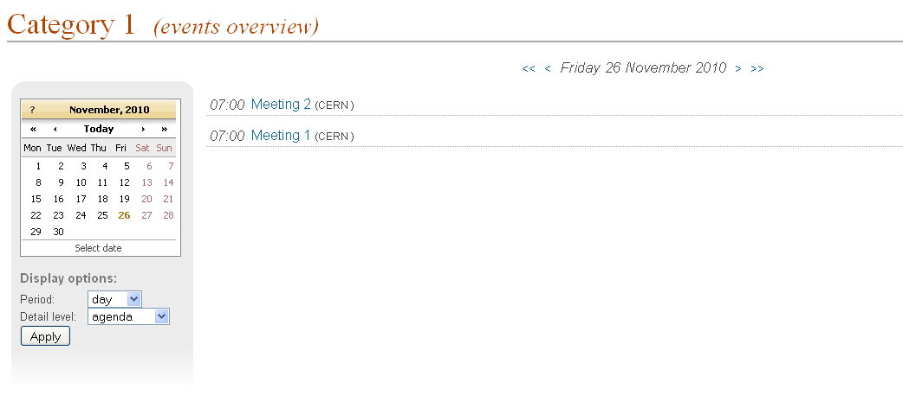
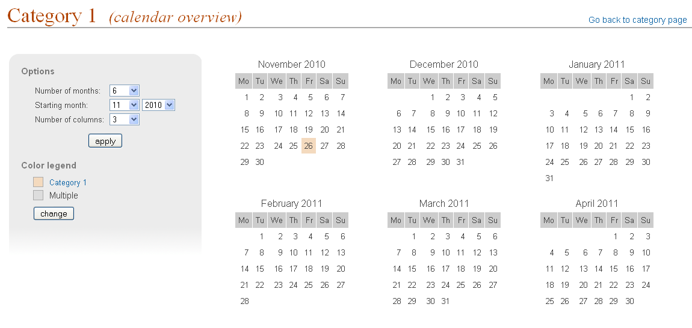
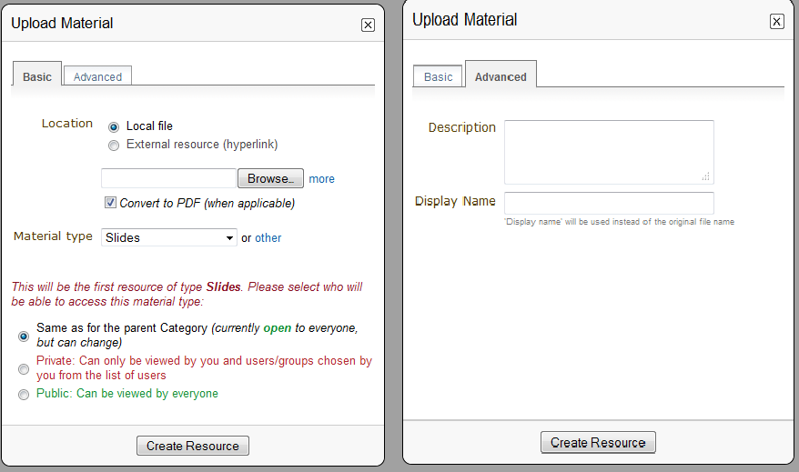

1. Categories¶
1.1. Category¶
A Category is a means of grouping your events or other Categories together. In Indico, Home is the top level category from where you start. Inside a category you can:
- add events or other sub-categories,
- set access rights to say who can access or modify,
- re-allocate the sub-categories,
- remove the sub-categories,
- and also delete the current category and everything inside it.
These features are accessible through the menu Manage (you must be logged in and with modification rights in order to see it), that you can find to the right of the title “Main categories”. After clicking Manage (more specifically its inner option Edit category) you will be accessing the Management area for Category.
1.2. Creating a Category¶
You can create a new category from the menu Manage and then by clicking on Add subcategory. You will need to have an Administrator’s account or be listed in the modification list (see Protection) for the category.
You can also create a subcategory from the Management area, which you access from the menu Manage, option Edit category. In General settings, (See General Settings) , click on the button add subcateg.

Setting the protection for your category is important. You can set it to Inheriting, Private or Public, see Access Control Policy .
1.3. Category overview¶
In the display page of the categories, the option View > Today’s events allows you to see the category’s event overview. Events that belong to the category and its subcategories from the specified period will be displayed.
It is possible to exclude some categories from the event overview, and hence control the visibility of the events belonging to the category in General settings (See General Settings) . Categories have three event visibility levels:
- Everywhere - events are shown in the event overview webpage for this category and the parent categories.
- Category name - events are shown only in the overview webpage for current category.
- Nowhere - events are not shown in any overview webpage.

As you can see in the previous image, it allows you to see all the events happening in one specific day. You can then view the other days by clicking on the arrows on top, or by choosing the day on the calendar on the left. Underneath the calendar, you can also choose the display options. You can choose to display the events over a day, a week or a month. You can also choose the detail level: agenda will show you all the events occuring over that period of time, sessions will only display the sessions and contributions will only display the contributions.

Calendar overview webpage : Another option for View is the calendar view. It gives you an overview of all the events over several months. You can access it by clicking on View -> Calendar. You can see all the events happening in one specific day by pointing with your mouse on the day you wish to view (see image above). On the left menu, you can choose the number of months you wish to view (up to 12), the starting month and the number of colums displayed. You can also change to color legend.
1.4. Category Management Area¶
1.4.1. General settings¶
In the Category Management Area, the first option in the menu is General settings:
You can modify the details of the category:
- Name
- Description
- Timezone
- Icon
- Default style (layout) for meetings created within this category (see Meetings)
- Default style (layout) for lectures created within this category (see Lectures)
- Event visibility for this category (See Category overview)
and you can modify its content:
- Add a new sub-category
- Re-allocate (move to another category) some events or categories
- Remove the inner events or categories

1.4.2. Files¶
In this option, you can add material to a category. To do so, click on the link Add Material. A window will appear:

When uploading material, in the Basic tab, you can select its access protection and set it to inheriting, private or public (for more details, see Access Control Policy ). In the Advanced tab, you can add a description and a display name. The display name will be used instead of the original name of the file.
1.4.3. Protection¶
From the Management Area you can protect your category using the three controls for access levels: Modification control, Access control and Domain control. You can add Users or Groups to the Modification and Access control lists. Conference creation control controls the users who are able to add events to this category.

Modification Control: Category Managers can be added to a category to allow access to the Management Area for modification. Category managers are either those listed in the modification control list or Indico administrators. The creator of a category will be able to modify its category without being listed.
Access Control: A category can be public, inheriting or private; Public: Anyone can view a public category and any user can add events to it. However, users will only be able to see the events inside the category to which they have access. Private: Only those users in the access list or administrators can access the category and add events. When a Category is made private, the option for domain control is omitted and any event or category made inside it will also be private. The category will be displayed with “(protected)” after its name to show it is private. Inheriting: The category will have the same access protection as its parent category. This means that changing the parent’s protection will change the protection of tha category.
Domain Control: The access to the Category can be restricted by domain. Therefore, just the users from the chosen domain will be able to access (e.g. If we choose the domain CERN, just users from inside CERN will be able to access the category and its content).
Conference creation control: You can restrict who is able to add events to the category. If you do so, you will need to add users or groups to the list in order to allow them to add events.

See Protection System in order to know more about Protection in Indico.
1.4.4. Detail Modification & Sub-Category/Event Organisation¶
The details of a Category can be modified and sub-categories can be organised from the option General settings in the management area. Details can be modified by clicking on modify inside the main menu. Sub-categories and events can be organised in the particular order in which you wish to view them by using the order drop down box next to each sub-category.

You can re-allocate a sub-category or event by selecting the one you wish to move using the tick box and clicking on re-allocate, you will then be asked to where you would like to reallocate this sub-category/event.
To remove a sub-category and anything it contains or an event, select it and click remove. If it contains anything you will be asked confirmation of the deletion.
1.4.5. Deleting a Category¶
To delete the current category you can go to the Tools menu in the Management Area and select ‘Delete this category’. There is no undo tool so far, but you will be asked to confirm the deletion first.